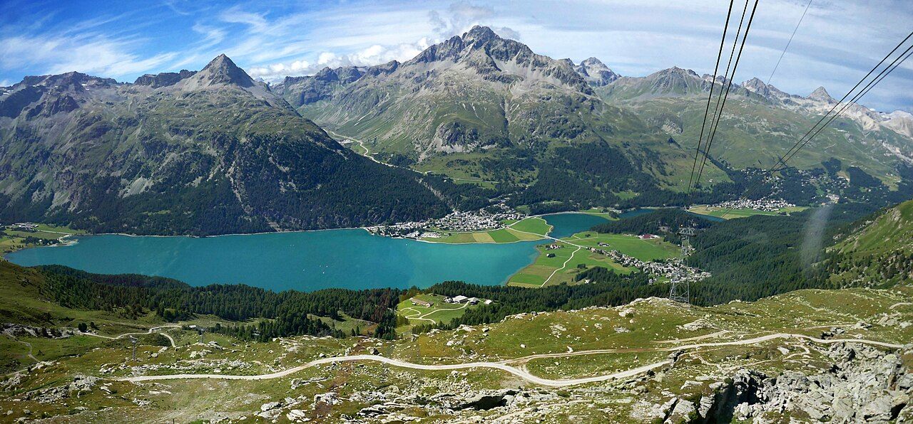

Revalidated · 18 October 2026Official sources support the corrections and published schedules below. Suggested activity times are a plan; transport times supplied by you and unconfirmed reservations are labelled separately. This guide does not update live.
Free conservatory music is the Venice default unless you choose a conflicting starred dinner. No verified staged opera within €60 for two was found on these dates. An affordable vocal Baroque recital is a conditional alternative.
02 / Christian history
Augustine’s baptism site is under the Duomo.
Choose archaeology-inclusive admission. Sant’Ambrogio is a separate, free basilica visit.
03 / Alpine views
Make time for the two larger lakes.
Muottas Muragl completed 20 October. Silsersee and Chastè are planned for 21 October with buses and a choice of shore walk. Open the station-to-hotel-to-lakes plan ↗
04 / Venice views
Keep the lagoon view free.
Punta della Dogana gives a waterfront pause. San Giorgio’s tower is closed for maintenance; no tower panorama is promised.
05 / Confirmed addresses
Two confirmed addresses, clearer transfers.
La Vineria: Via Sommavalle 1, Verona. Mestre: Corso del Popolo 124. Arrive Mestre first for bags; allow another 45–60 minutes to historic Venice.
06 / Pace
Saturday adds two cities together.
24 October’s default mapped total is 10.1 km. Shorter walking options cost extra transport but may make the day better.
Choose your pace
City maps & walking trails.
Choose a mapped walking option for each day. St. Moritz arrival day now prioritises two separate shore walks at Silvaplanersee and Silsersee, with station, hotel and bus instructions. Other activity menus are alternatives; they do not alter booked travel.
Food is part of the journey
One proper meal each day.
€80 maximum for TWO, once a day. Use bakeries, takeaway and supermarket supplies around the one seated meal. These are example baskets, not a prepaid package. Optional starred dinners are separately priced exceptions below and replace the ordinary dinner on their chosen days.
Two people · one table
Keep Swiss meals near CHF 70 to leave currency margin. ECB reference on 16 October: €1 = CHF 0.9272; €80 ≈ CHF 74.18, before card or exchange variation. ECB rates ↗
Day
Keep it simple
One proper meal · price for two
18 · Airport logistics
Simple food around actual travel
No city restaurant or meal basket assumed
19 · Milan
Bakery breakfast; Spontini €14–22 lunch
Risoelatte ~€69 dinner 19:00; optional Aimo €366 published subtotal plus extras
20 · Bernina / St. Moritz
Packed train breakfast and light snacks
Hauser CHF 58.50 dinner
21 · Engadin
Simple breakfast; CHF 18–25 supper supplies
La Stalla CHF 62.50 lunch
22 · Varenna
Bakery / packed travel lunch
Victoria Grill €69.50 dinner
23 · Verona
Simple breakfast and packed train lunch
Bacaro €63 at 19:00 OR city dinner; optional Il Desco €240/two food plus extras/taxis
24 · Verona / Venice
Bakery / packed lunch or late light supper
Do Spade ~€65 lunch if arrival permits, or checked dinner after music
25 · Venice
Farini breakfast €7.60; light bakery meal €18
Do Spade ~€65, €70–80 envelope; OR optional starred Sunday dinner (separate spend)
26 · Homeward
Bakery breakfast; flight snack
Mestre lunch near bags/airport route; €40–70 for two planning allowance, not a venue quote
Do Spade: €49 before water/covers, €16 provisional extras allowance = €65 model; plan €70–80 and confirm actual covers. Il Bacio is not a default because of conflicting open/closed evidence. Breakfast inclusion is unknown. Cheap-meal allowances are estimates unless a published basket is shown. Confirm covers, service, drinks and the final total before ordering. Transport, admissions and extra drinks sit outside these meal models.
Menus + actual customer and professional reviews
Choose a table with your eyes open.
Review snapshots checked 18 October 2026. Opinions and cached counts can differ by crawl; relayed aggregates are labelled. None guarantees a particular meal. Official menus and current service govern the bill.
Il Bacio is removed from normal recommendations: Tripadvisor labels it CHIUSO while its operator still advertises service. Conflicting customer listing ↗ · Operator ↗. Do not rely on it without direct operational confirmation.
Milan · ordinary meals and cheaper alternatives
One proper meal · 19:00
Risoelatte Duomo
~€69 / two
Ossobuco with risotto €32 + saffron risotto €17 + shared tiramisu €8 = €57 published food. Add €12 estimated water and two covers; no alcohol. Confirm extras.
Tripadvisor ↗4.5/5,2911 reviews; strong local-risotto/retro-setting signal, some value/booking-rigidity criticism.
Official menu ↗ confirms saffron risotto17, ossobuco+risotto32,tiramisu8. Food57 + previous12 allowance water/covers =69 TWO (allowance not quote). Hours ↗ daily12–14:30/19–23:30; reserve correct Duomo branch ↗. Keep19:00 normal default for19Oct; check actual deposit/cancellation terms before submitting.
Cheap pizza lunch
Spontini Duomo
€15–22 allowance / two
Two Margherita slices + two takeaway waters €14; larger slices €19.20. Official chain prices vary by branch; not valid inside Centrale.
Wanderlog customer-review aggregation ↗ exposes4.1/5 from731reviews. Visible individual reviews praise regional food, portions and friendly staff; aJan2026review criticises missing orders/service. This is mixed-positive, not a guarantee.
Keep as practical regional default withinCHF70two. Reserve a table via operator; dated20/21service exception and seats not checked. Access from Bad is additional.
Foodeist's attributed Tripadvisor aggregation ↗ exposes4.1/5,916votes; displayedJan2026reviews disagree sharply: one praises lively atmosphere, efficient service and food; another calls it touristy/poor value.
Keep as budget choice with explicit mixed-review caveat; no “best pizza” endorsement. Reserve through official page. Menu has old VAT footer; check posted total.
Foodeist's attributed Tripadvisor aggregation ↗ exposes4.1/5,916votes; displayedJan2026reviews disagree sharply: one praises lively atmosphere, efficient service and food; another calls it touristy/poor value.
Keep as budget choice with explicit mixed-review caveat; no “best pizza” endorsement. Reserve through official page. Menu has old VAT footer; check posted total.
Shared bresaola €16 + two perch risottos €32 + shared tiramisu €10 + water €4.50 + two covers €7. Published spring 2026 menu; confirm autumn dishes. Square-facing Grill, not Visteria.
Published Thu–Sun 12:00–22:00; confirm seasonal operation.
Tripadvisor UK ↗4.0/5,535 reviews (US533);2026 guests report both warm hospitality/good pizzas and service/value complaints. Suitable convenience, not unquestioned best-food pick.
Official hours/menu ↗, spring2026 PDF ↗: Thu–Sun12–22. Existing€69.50/two basket remains menu arithmetic, autumn menu not guaranteed. Pizza fallback€31.50/two using spring prices. Confirm current cover/water at door, no compulsory tip assumed. Keep practical budget default22Oct, with candid mixed quality signal.
Cheaper alternative
Victoria Grill · pizzas
€31.50 / two
Two Margheritas €20 + water €4.50 + two covers €7, from the same published menu.
Tripadvisor UK ↗4.0/5,535 reviews (US533);2026 guests report both warm hospitality/good pizzas and service/value complaints. Suitable convenience, not unquestioned best-food pick.
Official hours/menu ↗, spring2026 PDF ↗: Thu–Sun12–22. Existing€69.50/two basket remains menu arithmetic, autumn menu not guaranteed. Pizza fallback€31.50/two using spring prices. Confirm current cover/water at door, no compulsory tip assumed. Keep practical budget default22Oct, with candid mixed quality signal.
Conditional simple meal · review identity mixed
ALMA Bistrot
~€37 / two
Two pizzas €24 + water €5 published; €8 allowance for two covers. Confirm total.
22 October kitchen hours unconfirmed; use Grill fallback if closed.
Same-address Tripadvisor ↗4.1/5,45 reviews in US snapshot vs56 UK list; comments mix cafe/fine-dining and pizza, so aggregate does not isolate Bistrot. Avoid unrelated BagnaraCalabra listing despite Varenna reviews contaminating it.
Official Bistrot menu ↗: Margherita12,water5; two pizzas+water29 + cover allowance8 =37 TWO. Exact22Oct operation unknown. Demote to optional simple meal after checking actual menu/service; not a quality-led must-book.
Verona · ordinary meals and cheaper alternatives
Convenient farm dinner · mixed restaurant reviews
Corte San Mattia · Bacaro Agricolo
€63 / two
Shared goat cheese €12 + two tagliatelle €30 + shared tiramisu €7 + two Valpolicella glasses €7 + water €2 + two covers €5. Published basket. The restaurant review snapshot is 3.8/5 (424), distinct from lodging ratings. Choose convenience knowingly; a tasting is optional and separately priced.
Dinner daily 19:00–21:30. Confirm table and room-to-restaurant route.
Live official menu ↗ still supports63 TWO basket with goatcheese12,2pasta15,sharedtiramisu7,2Valpolicella3.50,water2,2covers2.50. Dinner daily19–21:30,booking recommended; correct linked online form on operator page. Retain23Oct default because hill lodging/transfer fit, with honest review caveat.
Cheap takeaway · from noon
La Bottega della Gina XXL
~€30 / two
Two tortelloni portions €24 published + €6 drinks allowance. Does not fit a pre-noon train; use a station packed lunch then.
Individual customer reviews ↗ praise fresh pasta; some find portions small or value weak. No aggregate rating is published here because the nearby-result attribution was ambiguous.
Official day menu ↗:2mixedtortelloni€24 food,~€30/two with drinks allowance. Cooked service starts12. Cannot serve as pre-noon departure lunch. Use only later train, otherwise packed/station lunch.
Quality-led city alternative · Guide-selected, NOT starred
Trattoria Al Pompiere
~€58 food + extras / two
Two €24 pastas + shared €10 dessert = €58 before water/covers; keep total within €80 and add separate taxis. Two €30 mains + two €10 desserts already reach €80 before extras. Replaces the farm dinner.
Mon–Sat 12:30–14:00 /19:30–22:00. Reserve if chosen.
Bigoli €16 + cuttlefish/polenta €18 + two wine glasses €8 + shared tiramisu €7 = €49 food/drinks. Add €16 provisional water/covers allowance = €65 for two; actual extras are unconfirmed. A €16 starter would make €81 with this allowance, so omit under the €80 cap.
Tripadvisor ↗: 4.2/5,2508 reviews; individual reviews visible July–September2026 praise Venetian food, small-room atmosphere and value; a May17 review reports uneven service; September18 reviewer reports €6/person coperto. This is a customer allegation, not official tariff.
Best supported budget proper-meal default. Reserve seated dining directly; clarify water and actual covers before ordering. Saturday lunch suits music, Sunday early dinner suits return to Mestre. Small/lively, not guaranteed quiet romance. Professional TouringClub listing ↗ corroborates Venetian dishes; it is not a Michelin star.
Tripadvisor ↗: 4.6/5,12111 reviews, with August15/September3,2026 accounts visible. Individual reports vary between convenience/portion praise and queues/salt/value complaints. Some reviews describe a seated restaurant; do not transfer those claims to the takeaway branch.
Queue-dependent lunch only. No promised seat, late dinner or refined-dining claim. Respect city rules on eating/sitting in public places; do not adopt review anecdotes about church steps as advice.
Cheaper bakery breakfast or light meal
Farini Rialto
€18 / two
Pizza slices, e.g. Margherita/vegetable €16 + Two 0.5L waters €2. Two cappuccinos €1.80 each + two filled croissants €2 each = €7.60 for two, using published prices.
Correct branch Tripadvisor ↗: 4.3/5,571 reviews. Do not use1345-review SanLio branch aggregate. Official page ↗ republishes dated Google reviews September2025 describing coffee/pastry and reheated slices; these older embeds supplement the current TA snapshot.
Useful cheap breakfast/other meal, not the special daily dinner. Check price/seating before sitting.
Optional exception to the ordinary meal cap
One memorable starred dinner. Or two.
Choose zero, one or two deliberate splurges. The ordinary €80/two daily meal budget still applies elsewhere. A star, Guide selection and Bib Gourmand are different distinctions.
Practical ranking: Sunday Wistèria first, Local alternative; for a second splurge add Friday Il Desco. Each replaces that day’s ordinary dinner. Drinks, covers/extras and transport sit outside food subtotals. No reservation, card submission or seat availability is claimed.
ONE Michelin star · optional separate spend
1 / Sunday Wistèria · strongest practical fit
Request 25 October 19:00. Six courses €350/two food; eight €420/two. Six-course planning envelope without pairing €400–470/two with estimated extras, not a quote. Allow 2½–3 hours, choose the same menu across the table, make lunch cheap and skip M9/late island plans. Western San Polo is easier for the Mestre return, but the actual last train/4L has not been checked. Pairing adds €150/two for six glasses. Water/coffee/transport extra.
Seven courses €320/two food; nine €380/two. Seven-course planning envelope €370–450/two without pairing is an extras allowance, not a final quote. Whole-table tasting menu; seasonal dishes can change. Request the earliest confirmed dinner, allow 2½–3 hours and skip M9/late island plans. Castello is farther from Santa Lucia; check walking/boat plus mainland return, or budget a land taxi from Piazzale Roma without an invented fare.
23 October 19:30 after the approximately 16:15 farm arrival; another taxi is required. Three courses €240/two food; four €270, five €290; named tasting menus €280/310/340 for two. Drinks/extras/taxis separate. The currently linked June menu has summer ingredients: reconfirm autumn menu and price. Allow 2–3 hours; arrange return to Via Sommavalle 1. Customer snapshot: Tripadvisor 4.5/5, 685 reviews, praise for balanced flavours/service with some value/refinement criticism.
19 October 19:00 shorter à la carte: two dishes + dessert €180/person, plus one €6 water = €366/two published subtotal; wine, extras and taxis additional. Allow 2–2½ hours plus travel; the 06:20 train next morning makes the early night valuable. Replaces Risoelatte and any theatre. Chef’s Table €450/person requires three days’ advance, so it is not feasible for tomorrow. Tripadvisor snapshot 4.4/5, 1,227 reviews; detail/service praised, older two-star descriptions are stale.
Saturday Il Desco lunch starts 12:30: €180/two food (or €220 with three glasses each) is a different itinerary decision requiring a confirmed later train and replacing/reducing Venice music. Official lunch ↗. Visteria and Al Pompiere are Guide-selected, not starred. Swiss Talvo, Ecco and Da Vittorio are closed for 20/21 October under checked seasons; no Swiss starred dinner is proposed. Talvo season ↗ · Ecco dated closure ↗ · Da Vittorio season ↗. Venice Oro and Quadri are one-star but their dinner quote/policy audit is incomplete, so they are secondary enquiries, not ready dinner plans.
Music without stretching the trip
Listen well. Spend gently.
No verified staged opera at or below €60 for two was found on your dates. Vocal Baroque is a conditional alternative only if the direct venue total stays within the entire €60 couple cap.
Default Saturday choice
Directors as composers — Conservatorio Benedetto Marcello 150th anniversary
24 Oct · 18:00 · FREE
Sala Concerti, Conservatorio Benedetto Marcello, Palazzo Pisani, San Marco 2810, historic Venice
Two pianos, percussion and spoken voice; adventurous twentieth-century Italian concert, not opera.
Official dated programme says free admission until seats are exhausted; no seat guarantee, reservation or duration confirmed.
Aim to reach the venue around 17:30; suggested arrival, not a published door time. This replaces another music event. Eat the larger meal at lunch, or arrange dinner after the actual finish.
Auditorium Cesare De Michelis, M9 Museo del '900, Mestre mainland
Mozart quartet fragments and orchestra, Bach Art of Fugue; introductory conversation in Italian. Concert, not opera.
Official conservatory programme publishes €5 admission and tickets at the M9 box office. No seats checked.
Convenient for your confirmed Mestre base, while still requiring a checked route to M9. It conflicts with the historic-Venice free concert and requires foregoing part of the first canal afternoon. Choose one.
Optional Sunday concert · same €60 trip music ceiling
Sulle note del secolo — Da Bach a Ravel, attraverso Kurtág, Casella e Boulez
25 Oct · 18:00 · €20 for two
Auditorium Cesare De Michelis, M9 Museo del '900, Mestre mainland
Conservatory piano recital, solo and four hands; includes Bach chorales arranged by Kurtág, Casella, Boulez, Ravel and Debussy.
Official programme publishes €10 regular admission; online and M9 box-office sales. Any online fees and seats need checkout. The free Saturday default plus this recital is €20/two before fees, within the €60 trip music ceiling. Other paid Saturday choices reduce that remaining budget.
If selected, replace the San Giorgio sunset outing and Cannaregio evening. Leave historic Venice around 16:00–16:15 with a checked mainland connection to reach M9 by about 17:30. Do not assume M9 is beside Mestre station.
Vocal Baroque option only at the published fee-free venue couple rate
Intimate Notes: Pearls from Venetian Chamber Music
24 Oct · 19:00–20:00 · €60 couple venue rate ONLY if confirmed
Scuola Grande dei Carmini, Dorsoduro 2616–2617, historic Venice
Vocal chamber recital, soprano with basso continuo. Vivaldi, Antonia Bembo and Benedetto Marcello; Liesl Odenweller with Venice Music Project Ensemble. Not staged opera.
Official FAQ lists couple (two together) €60 and direct box-office sales. This supports the advertised venue rate but does not guarantee zero additional fees or available seats on arrival. Online dated Clappit ticket breakdown is €69.86 for two, so exclude online purchase under the €60 cap.
Published venue box office daily 10:00–17:00, and event evening 18:00–18:45, except private-event closures. Ask for the couple rate and total before paying. If total exceeds €60 or no seats, use the free conservatory alternative only if timing still allows; otherwise enjoy a meal and canals.
St. Mark's Basilica; Porta dei Fiori, north side Piazzetta dei Leoncini
Sung solemn Mass: participation in worship, not a tourist concert.
Regular official worship schedule, sung by Cappella Marciana. Services can vary. This is participation in worship, not a free concert or tourist access shortcut.
Choose one Saturday event. The free Pisani concert is twentieth-century Italian music, not opera. M9 Mozart is €5 each / €10 for two at 18:30 on the mainland. Sunday M9 piano is €10 each / €20 for two and replaces the late lagoon walk. The vocal Baroque recital at Carmini is 19:00 on Saturday; published online total €69.86 exceeds the cap. Confirm a fee-free €60 couple venue total and seats before buying. Conservatory capacity and all paid seats remain unconfirmed.
Your daily field notes
A few anchors. Plenty of choice.
Published opening rules checked 18 October; actual tickets, weather, seats and supplied transport remain unconfirmed. Visit durations and buffers are estimates.
Open cards for the practical detail
18Sun
Airport & flight preparations
Frankfurt airport only
Choose 1–2 anchorsCheck the next flight, terminal and baggage arrangements.
No sightseeing is planned. Any overnight transfer depends on the actual booking; the old city hotel is not assumed. Check airline bag-drop rules for the supplied FRA–LIN flight tomorrow, 09:10–10:20. A terminal arrival around 06:30–06:40 is only a planning target, subject to airline requirements.
Flight logistics
Two useful tasks: check the airline/terminal/baggage rules, then arrange food, rest and any overnight transfer around the actual booking. No city programme or restaurant/concert reservation.
Station-based startsAddress transfers, bags and ordinary movement remain additional to mapped routes. Venice visits include a separate Mestre–Santa Lucia trip.
Choose 1–2 anchorsDuomo archaeology + Sant’Ambrogio; roof OR a gentle free walk.
FRA–LIN 09:10–10:20 is supplied, unverified. Allow 60–90 minutes for city transfer/luggage, then lunch. Start from Milano Centrale after those tasks; around 13:30 is a safer paid visit than noon. Via Ponte Seveso 18 is the existing Milan stay; add its luggage detour. Protect sleep for tomorrow’s 06:20 train.
Skip Last Supper and San Maurizio: closed Monday under published schedules. For Augustine’s baptism site, a roof Combo alone does not include archaeology. Choose the right cathedral/archaeology admission. Museum is a sensible rain alternative; avoid stacking cross-city interiors.
Compare the alternatives · choose, don’t stack
01 / Flexible choice75–90min
Duomo interior + San Giovanni alle Fonti archaeology
History ↗, official visit ↗, published inclusions ↗, buy ↗. HIGH booking priority after checking19 Oct calendar. Archaeology supplement €5/person requires cathedral ticket; Culture Pass €15/person includes archaeology, museum and crypt, excludes roof. Standard roof Combo does not list archaeology. General published daily 09–19 subject to services/security; verify chosen dated slot.
02 / Clear / dry weather45–60min
Duomo terraces
Best central Milan panorama; marble spires, skyline and distant mountains only in clear visibility. Add45–60min, preferably late afternoon if it does not displace basilica. Weather-dependent, stairs remain even with lift.
Published access · booking
Roof details ↗; opening/booking links above. MEDIUM priority; decide with forecast. Published roof-only €16 stairs/€18 lift per adult; Combo €22/€26 includes cathedral/museum but archaeology extra. No19 Oct inventory verified.
03 / Rain-friendly45–60min
Sant'Ambrogio
Ambrose's burial/legacy, atrium and Romanesque church;45–60min,15:30 works after Duomo. Free core basilica, no ticket booking. Good rain choice.
Published access · booking
Basilica operator ↗: sightseeing Mon–Sat10–12 and14:30–18, subject to liturgy. Do not use longer general church opening as tourist hours.
04 / Flexible choice20–35min
Galleria Vittorio EmanueleII + Piazza della Scala
Free20–35min architectural/photo pause adjoining Duomo; covered arcade useful in showers. Exterior theatre photo, not an assumed performance.
Allow 45–60min, sacred sculpture/stained-glass context. Use existing included ticket, rather than another museum across town.
Published access · booking
See official Duomo visit/inclusions/ticket links. LOW separate-booking priority; museum's published weekly closure is Wednesday, not Monday. Confirm19 Oct operation in portal.
Station-based startsAddress transfers, bags and ordinary movement remain additional to mapped routes. Venice visits include a separate Mestre–Santa Lucia trip.
12:35 station → San Gian → Silvaplanersee → Silsersee
Prioritise the two lakesHotel and lunch first; Silvaplanersee + Silsersee by bus and short walks.
Start at St. Moritz Bahnhof at 12:35, your supplied arrival time. Go to Hotel San Gian in Bad for luggage and a quick lunch, then prioritise Silvaplanersee and Silsersee. The step-by-step route below begins at the station and returns to the hotel. Local Lake St. Moritz, Segantini and spa remain alternatives if conditions require a change.
Season cutoffs matter: Segantini ends 20 October. Museum Engiadinais is unavailable 20–22 October. Signal/Corviglia summer lifts ended 18 October; Corvatsch ended 16 October. Diavolezza has a separate autumn season and remains a conditional option on the full day.
Earlier 20 October proposal · not a completion record
Journey update: Muottas Muragl was completed 20 October. Silsersee is planned for 21 October; use the updated lake day. The earlier two-lake proposal is retained for reference.
Silvaplanersee & Silsersee.
Station → Hotel San Gian → Silvaplanersee → Silsersee → hotel. Drop the bags, have a light lunch, then enjoy two short lakeside walks with a bus between them. These are the priority over the local Lake St. Moritz circuit. Plan about 3–3½ hours from the hotel for both lakes, including bus waits and photos; shorten the walks if the train or lunch runs late.

Silvaplanersee / Lej da Silvaplauna. Elevated summer view, August 2021; October colours and shoreline views will differ. Photo: Tiia Monto / Wikimedia Commons ↗ · CC BY-SA 4.0 ↗. Resized.
12:35 · arrive at St. Moritz Bahnhof. Leave the train and follow the bus signs outside the station. The published 601 at 12:46 is a candidate, with about 11 minutes to St. Moritz Bad, Via San Gian; confirm the destination/display with the driver. If missed, check 609 toward Bad or use a taxi direct to the hotel. 601 station departures ↗ · 609 backup ↗.
About 13:00–13:40 · Hotel San Gian, Via San Gian 23. Allow roughly 5–10 minutes on foot from Via San Gian stop, leave luggage with reception if the room is not ready, and have a quick lunch. Collect your hotel public-transport pass and confirm it covers today’s buses. With bags, bus/taxi is the preferred station transfer; the planner offers a separate optional station-to-hotel walk. Check this connection ↗.
13:57 bus candidate · Silvaplanersee first. Return to Via San Gian stop by about 13:50. The printed 601 at 13:57 → Silvaplana, Rundella Curtins at about 14:07 gives time for both lakes; 14:27 is a backup. 601 hotel-stop departures ↗. Walk Rundella Curtins → Mandra → Mulets shore → Senda dal Lej photo turn → Silvaplana, Camping. The measured walk is 1.74 km / about 26 minutes moving; allow about 30–35 minutes with brief photos. Leave Rundella promptly and reach Camping by 14:40–14:42 for the onward bus. Use signed public paths; shorten the photo stops if needed. Check this connection ↗.
14:47 bus candidate · Silsersee next. At Silvaplana, Camping, take 605 toward Sils/Segl Maria, Posta (about 7 minutes riding; printed afternoon departures around :17/:47). Aim for 14:47 → about 14:54. If you prefer longer at Silvaplanersee or miss it, the 15:17 → about 15:24 candidate shifts the Silsersee walk to about 15:30; shorten that shore visit if needed and target the checked 16:57 return. From Posta, follow the mapped pedestrian route toward the Chastè approach on Silsersee’s eastern shore, take a lake-view pause and retrace the same route to Posta. This 2.83 km / about 42 minutes moving walk takes roughly 55–65 minutes with photos, around 15:00–16:05. Keep to the direct approach; a detour through Baselgia village adds distance. The full official Chastè circuit (4.36 km / 1h12) is a different, longer route; choose it on a longer, dry outing. 605 departures ↗ · Chastè official walking guide ↗.
About 16:15–17:30 · return to San Gian. Be back at Sils/Segl Maria, Posta for a checked 601 toward St. Moritz; the printed 16:27 / 16:57 are candidates, taking roughly 30–35 minutes riding, plus the hotel walk. Current diversions can change the stop times, so check the live display. Aim to finish unfamiliar lakeside walking by about 16:30 and be back at the hotel around 17:00–17:30. Choose an actual return before leaving reception. Dinner or an optional short Ovaverva visit comes afterwards. 601 Sils return departures ↗ · Check this connection ↗.
Timing: 12:35 is your supplied train arrival. Bus times above come from published summer stop timetables valid through 25 October 2026; they are not live operating checks. Current notices include a temporary Signalbahn stop and no Furtschellasbahn service from 17 October; live times can differ by a minute or more. Sils stop & current notices ↗. All activity blocks, hotel access and total outing times are planning allowances. Check SBB journeys ↗ and the stop display for 20 October, including any diversions.
Walking & tickets: the two shore walks total 4.57 km / about 69 minutes moving; allow roughly 85–100 minutes including photos. Bus travel connects the separate walks. City maps & trails ↗ has the measured pedestrian routes; hotel/stop access, transport waits and wandering are extra. The lakes have no admission ticket. San Gian advertises local transport for summer stays of at least two nights; use the issued pass only after reception confirms coverage. Otherwise buy valid tickets before boarding; fares are not estimated here. Hotel location & benefits ↗.
If delayed or the weather turns: keep both lakes as the priority but reduce each to a brief shore pause. If there is insufficient safe daylight, choose one lake today and move the other to tomorrow’s landscape slot. In persistent rain, poor visibility or icy paths, switch to Segantini today or Ovaverva. Lake St. Moritz is a nearby fallback. Wear layers and grippy shoes; wind and early mountain shade can make the shore cold.
Nearby and indoor fallbacks · replace the lake outing if needed
01 / Rain-friendly60–90 minutes
Segantini Museum
Alpine paintings; 60–90 minutes indoors. Allow 20–35 minutes each way from hotel, walking/bus depending on connection.
Published access · booking
Tue 20 Oct falls within season; 11:00–17:00, last entry 16:45; adults CHF15 each / CHF30 two. Closed from 21 Oct. Official hours, price and access ↗ · If choosing this indoor fallback, visit today; ordinary visit has no published compulsory reservation. Confirm any exceptional closure; no ticket availability calendar checked.
Nearby fallback · 30–65 min WALKING
Lake St. Moritz: brief shore pause or official circuit
Choose a proposed unmeasured 15-minute out-and-15-minute-back shore pause, or the official full 4.3 km / 65 min / 0 m circuit. With Bad access/photo pauses allow about 1h40–2h10 for the full circuit. This differs from the planner’s 6.85 km route, which includes Bad/hotel access. Do not add a whole lake circuit before Segantini’s 17:00 last-day closing.
Small nearby introduction to the mineral-spring history, including ancient spring structure; 30–45 minutes; hotel access roughly 10–20 minutes on foot.
Published access · booking
Regular daily 07:00–20:00. Fountain currently out of service: do not promise tasting. Tariff not established from source. Official listing ↗ · No ordinary reservation stated; check access locally. Useful rain option, not a large museum.
04 / Rain-friendly1½–3 hours
Ovaverva
Pool/spa recovery after the early train; allow 1½–3 hours; next door to San Gian.
Published access · booking
20 Oct pool08:00–22:00; spa10:00–22:00; last entry 21:00. Hotel advertises included guest admission. Operator hours ↗ · Hotel benefit ↗ · Ask reception how to collect guest access before buying. Treatments are separate: book through official shop ↗ if wanted; treatment availability unchecked.
05 / Clear / dry weather3–4 hours
Muottas Muragl viewpoint
Wide lake-chain panorama; allow 3–4 hours total including hotel transfers and an unhurried viewpoint stop. About45–70 minutes hotel-to-top including waits is a planning allowance.
Published access · booking
Published summer season through 25 Oct;10-minute funicular. Hours and tickets ↗ · Check weather and live facilities ↗ first; confirm pass with hotel. Buy through official ticket link only afterwards. Dated checkout price/availability not verified.
06 / Longer alternative · dry / ice-free only2–3 hours
Longer optional forest/lake outing · Lej da Staz
Quiet forest reflection alternative; allocate 2–3 hours from hotel, reducing route if tired.
Published access · booking
No admission; tourism gives roughly 50 minutes walking from Celerina. Access duration from Bad is an estimate. Restaurant operation not verified. Official lake guide ↗ · No booking; use only if dry, sufficient daylight and locally confirmed ice-free paths.
07 / Clear / dry weather1–2 hours
Dorf, lake escalator and Design Gallery
Easy town/art/café alternative;1–2 hours plus15–30minute hotel access allowance.
Published access · booking
Outdoor streets and gallery by lake escalator shown on official town map ↗. No dated exhibition access verified. · No advance purchase needed for a town stroll; cafés cost extra. Shorten in rain.
From your 12:35 arrivalStation → San Gian → Silvaplanersee → Silsersee → San Gian. Bus transfers and hotel access are separate from the two mapped shore walks.
A relaxed lake day from Hotel San Gian · planned, not completed
21 October · the lake dayShore views, a little woodland and time together. Muottas Muragl was completed yesterday, 20 October.
Plan researched 21 October 2026, 10:07 CEST. From Hotel San Gian, check an actual 601 connection from St. Moritz Bad, Via San Gian to Sils/Segl Maria, Posta; not every departure reaches Sils. Allow up to one hour including waiting. Check the return, weather, path and ice conditions before leaving. Hotel pass possession and coverage remain unconfirmed.
10:30–11:15
Suggested departure window
A planning allowance, not a bus departure. If leaving after lunch, choose the short shore option.
11:15–13:15
Shore & Chastè, at your pace
The mapped short route is 2.83 km · about 42 minutes moving: the Chastè approach and return, not the peninsula circuit. Allow 60–90 minutes with photos. The separate official Sils–Chastè–Sils circuit is 4.36 km · 1h12 moving · 49 m climb; allow 1h45–2h15 with photos. Follow the official route after checking conditions; its metrics do not describe the short map trace.
13:15–14:15
Lunch or cake, subject to opening
Check a local venue and prices; bring a snack. This Sils stop is separate from the existing La Stalla meal model in St. Moritz. No meal or table is reserved.
14:15–15:30
Pause, then return
Finish the shore by 16:00; aim for Hotel San Gian by 16:30. These are planning targets, not sunset or last-bus times. Late start: keep to a short shore or village pause and protect the return.
Season and access: scheduled lake boats ended 18 October: no boat crossing or return. Via Engiadina, Sils Föglias–Sils Baselgia, is indefinitely closed for rockfall; do not add that higher extension. The whole-lake walk is about 16 km, not a short outing.
Bus-stop changes & practical notes
Signalbahn stop toward San Gian is moved 30 m toward the car park, 12 October–16 November. Check your actual stop and direction. Routes 601/605 also have Serlas diversions, 7 September–4 December. The seasonal timetable changes 26 October.
Pack layers, waterproof shoes with grip, hat and gloves. No live weather, trail clearance, venue opening or exact departure is asserted.
Other Engadin choices · alternatives, not additions to today
Nearby fallback · 30–65 min WALKING
Nearby lake: 30-minute pause OR official circuit
The shortest option is a timer: 15 minutes out, then 15 back on a locally safe shore section; this is proposed and unmeasured. The official full Lake St. Moritz circuit is 4.3 km · 65 minutes walking · 0 m up/down, plus photo pauses. From San Gian allow 10–20 minutes to/from shore; the circuit’s whole outing is about 1h40–2h10. The mapped planner’s 6.85 km “full” outing includes Bad/hotel access and is a different route.
Optional valley introduction · 30–60 min WALKINGExtend to 60–90 min only if conditions suit
Val Roseg: forest, river and a gentle turn-back walk
Start at Pontresina railway station and follow the signed paths into Val Roseg. Walk 15–30 minutes into the valley, then return the same way: 30–60 minutes walking altogether. For a longer sample, turn back after 30–45 minutes for 60–90 minutes total. These are proposed time budgets, not a measured short route. Enjoy the woodland, Rosegbach and benches; the broad glacier panorama near the distant hotel is not promised on this short introduction. Choose this instead of another outing, preferably in a dry late-morning window on 21 October.
Access and whole outing: a direct RE9 train from St. Moritz station takes about 9 minutes in the checked 21 October search. From the Via San Gian bus-stop area, bus 602 takes roughly 35–40 minutes including the final station approach; add the walk from the hotel and waiting. Allow roughly 2–3 hours from San Gian for the 30–60 minute walk, an estimate including connections and pauses. The 60–90 minute version may need longer. Check 21 October rail connections ↗ · Google directions to Pontresina station ↗. Recheck both directions and your actual stop; fares and hotel benefits remain separate.
Seasonal catch: the hotel/restaurant is listed closed 19 October–4 December 2026. Do not plan a lunch, cake buffet, hotel shuttle or indoor warming stop there. The operator’s published summer omnibus ends 18 October and its winter schedule starts in December, so no scheduled public carriage is established for 20–22 October. Bring water and a snack. Dated restaurant season ↗ · Public carriage seasons ↗.
Maps · conditions · booking
Official valley description ↗ · Official full-valley route map ↗ · Pontresina local conditions ↗. The official mapped winter route gives the scale of the full valley, not prepared October conditions or a measured route for the short sample. No trail reservation is needed for the short walk. If current weather brings rain, snow or freezing nights, check locally before starting and turn back for ice, accumulating snow or poor visibility.
Private carriage or the full valley: a separate choice
Private carriages are advertised year-round, including Val Roseg one-way, return or hourly rides, by quotation. Ask whether a short ride or a ride to the head of the valley can operate on 21 October; confirm weather, total price for two, meeting point and both pickup/return arrangements before relying on it. Availability and an off-season fare have not been verified, and the seasonal public fare is not a private quote. Private carriage offer / request a quote ↗ · Operator contact and meeting point ↗.
The full route to the hotel is approximately 7 km one way; walking there and back is around 14 km and 3½–4 hours before breaks, a planning estimate. That is a longer outing, not your short-hike default. Walking one way and riding back only works with a confirmed return carriage; the hotel closure still applies.
60 min WALKING · 3.5 km · +125/−135 m
Celerina → Cristolais → Samedan
Rolling valley path, not flat promenade. Allow 25–45 minutes outbound and 35–55 minutes back from the hotel area; whole outing about 2h15–3h15. Public transport closes the route, with separate fare unless a benefit is confirmed. Choose this instead of a distant summit.
The easiest published elevation profile, but not the nearest option. Allow 45–70 minutes each way from the hotel area plus exact trailhead access; whole outing about 2h30–3h30. Wetland paths can be wet or frozen.
A short walk with a longer journey: allow 1h45–2h15 for the full circuit with photos, 40–65 minutes each way by bus/waiting, whole outing 3–4 hours. Woodland roots and shore paths may be icy; this is an optional longer outing, not a quick local hike.
Optional longer walk over uneven moor/forest paths. Access 25–45 minutes each way from the hotel area; whole outing about 3–3h45 with pauses. Shaded roots can retain ice; downgrade if current conditions bring snow or rain.
You confirmed this visit on 20 October. Historical planning allowance: 3–4 hours total, or longer for a meal. Hotel-to-top allow 45–70 minutes. Stay near summit station unless paths are confirmed safe.
Published access · booking
Summer season through 25 Oct;07:45 first,23:00 last service; every30 minutes at:15/:45, with23:00 separately listed. Afternoon viewpoint can avoid restaurant cost. Operating hours ↗ · Official tickets ↗. Wait for visibility; confirm hotel pass and exact evening validity before paying. No dated purchase tested.
02 / Clear / dry weather4½–6 hours
Diavolezza glacier panorama
Alternative high mountain, not an extra stop in an already full day. Allow 4½–6 hours total, including roughly 60–90 minutes each way by public transport/waits from hotel; check actual SBB itinerary.
Published access · booking
Published17 Oct–15Nov daily 07:40–16:20, every20 minutes. Current status on research day says open; this is not21 Oct confirmation. Calendar ↗ · Status ↗. Published2026 pedestrian return CHF46/adult, CHF92 two before any confirmed hotel benefit. Fares ↗ · Official shop ↗. Confirm date-applicable tariff at checkout. Wait for weather; no summit hike/glacier walk implied.
03 / Clear / dry weather3–4 hours
Pontresina village + Santa Maria
Strongest Christian-history option;3–4 hours including village, church and hotel access allowance35–55 minutes each way. Church is uphill: allow walking time.
Published access · booking
Weekdays 15:30–17:30 through 23 Oct; specifically Wed21 Oct free guided tour17:00–17:30. Official dated tour and self-visit hours ↗. No individual booking requirement stated; ask language locally. Self-visit 15:30 preserves an earlier Muottas transfer;17:00tour means later mountain arrival.
07 / Rain-friendly2½–4 hours
Ovaverva + Forum Paracelsus
Best wet/low-cloud combination near hotel,2½–4 hours with rest; add a café or short shore interval only if comfortable.
Published access · booking
Pool/spa10:00–22:00, last admission21:00 on21 Oct; Ovaverva hours ↗. Hotel advertises included access; get reception instructions. Forum regular hours ↗ daily 07:00–20:00; fountain unavailable. Massage requires separate booking/cost.
Station-based startsAddress transfers, bags and ordinary movement remain additional to mapped routes. Venice visits include a separate Mestre–Santa Lucia trip.
Choose 1–2 anchorsOrdinary regional trains, bags first, then one Bellagio ferry trip if dry and on time.
Thursday’s simple plan: St. Moritz → Tirano by ordinary 2nd-class RhB regional train; Tirano → Varenna-Esino by Trenord. The regional train has the same Bernina scenery without the panoramic supplement. Actual rail fares and connections still need checking; assume two adults with no rail pass.
Train to Varenna; ferry to Bellagio or Menaggio. Only Varenna has a railway station. Bellagio and Menaggio have none. Passenger ferries connect the three towns in both directions; foot passengers can use car ferries without a car.
Morning: check SBB for 22 October. Check out and collect bags at Hotel San Gian first; confirm the live 601/609 from Via San Gian to St. Moritz Bahnhof and target the station by 08:20. No bus departure or hotel-pass coverage is assumed. Published RhB candidates: 08:48 → 11:00 Tirano, or 09:48 → 12:23; confirm live before buying. Main published connection: Trenord RE2827 at 12:08 → 13:35 Varenna-Esino, giving 68 minutes after the 11:00 RhB arrival. Avoid the fragile 11:08 Italian departure. If taking the later RhB, choose a later Italian train with at least 30–45 minutes buffer. Official RE8 timetable ↗
On arrival: target 13:35 at Varenna station, confirm your hotel’s bag/check-in arrangements, then enjoy free Riva Grande and Lovers’ Walk. Aim to sort bags by about 14:15, enjoy a short stroll/snack, and reach Varenna pier by 15:00 for the 15:25 ferry.
15:25 → ~15:40 Bellagio: waterfront → Salita Serbelloni → San Giacomo square → Punta Spartivento → pier. Allow about 60 minutes walking/photos plus a short café stop; shorten Punta if needed. Join the return queue by 16:55.
17:20 → ~17:35 Varenna: return for more local daylight before dinner, with 18:20 → ~18:35 as backup. Check today’s notices and boarding capacity; avoid planning around the last boat. Victoria Grill around 19:00 only if your actual return allows.
For two: free village/photo stops + source-dated ordinary ferry return €22 + existing Victoria Grill meal model €69.50 = €91.50 before rail, snacks and extras. Rail total is unresolved: add two actual Swiss one-way quotes plus an estimated €16–20 for two on Trenord (allowance only, not a route fare quote). Skip the boat and save €22 if late or wet; a three-leg triangle would be €33 for two at the same single fares, with less relaxed sightseeing.
Cheap transport comparison & how to buy
Recommended: ordinary RhB regional via Tirano. Compare the actual 22 October 2nd-class one-way fare for each traveller in SBB; apply Half Fare or other discounts only if entitled. Buy before boarding. Optional regional Bernina seat reservation is CHF5/person; unreserved travel is allowed. A reservation is separate from the travel ticket. Do not mistake a promotional “from CHF33” offer for your full adult fare. RhB regional reservation rules ↗
Separate Italian leg: search Tirano → Varenna-Esino, 22 October, in Trenord. Select a departure leaving 30–45 minutes after your confirmed RhB arrival, inspect disruptions and buy the correct dated ticket. Follow that ticket’s digital/paper validation rules. The two Tirano stations are adjacent, but separate tickets do not protect a missed connection. Avoid the last coaches at short platforms.
Alternative via Maloja: ordinary PostBus 604 through to Chiavenna, then train via Colico → Varenna. Published candidates 09:18 → 10:56 or 10:18 → 11:56 Chiavenna; many 604s terminate at Maloja, so verify the through bus. Compare the full two-person bus + both train quotes before deciding: this is not proven cheaper. Palm Express 631 is a different reservation product. A hotel local pass does not automatically cover the full Tirano journey. Official summer timetable through 25 October ↗
Ferry: after arrival looks credible, use the official operator/pier to buy ordinary foot-passenger tickets in both directions. Published April fare: €5.50/person/leg, €22/two return; confirm the actual fare and service type. Three single legs cost €33/two; the published stretch-3 day pass is €17.50/adult (€35/two), so neither a simple return nor three singles needs that pass to save money. Confirm its geographical validity if considering other stops; no fast-service supplement is included. Tickets/timetables ↗ · Live notices ↗. Arrival times above are 15-minute crossing arithmetic, not printed arrival rows.
Free photo stops · couple, solo & camera checklist
Riva Grande: couple turn 45° toward each other, inner hands linked, look at each other; camera 3–5 m away at chest height, 1×. Solo: weight on rear leg, front knee soft, torso toward lake, face to camera. Use coloured houses or lake as background.
Lovers’ Walk: walk hand in hand toward the camera, one looking at the lake and one at their partner. Short burst at 1× from a wider section; keep the narrow path open.
Ferry: shoulders together, bodies diagonal to shore, faces toward soft light; level horizon, 1×, a little railing foreground. Stay inside the railing and clear of boarding.
Salita Serbelloni: stand on a broad landing, angle bodies along the stairs and look back toward the camera below, 1× or 2×. Solo: one hand at lapel, soft front knee. Avoid blocking steps.
Punta Spartivento: side by side with lake branches behind, look first at the mountains then each other; chest-height 1×, off-centre framing. Hills can shade the shore early: no promised sunset glow.
Rain café: with permission, sit diagonally to a window, cups in hand, look at your partner; 2×, no flash. Make the stop the experience rather than chase wet viewpoints.
Late or rain backup: if you cannot reach the pier by 15:00 but conditions are good, use the later 16:30 → ~16:45 Bellagio ferry (pier 15:55–16:05), return 18:20 → ~18:35, backup 18:50 → ~19:05; join the Bellagio queue by 17:55. If still sorting bags at 15:40, or notices/weather look poor, stay in Varenna. Short Riva Grande stroll → café/window portraits → Piazza San Giorgio; church interiors only if open. Add Monastero house only if access, arrival and the admission cost suit. No boat or villa is required for a good afternoon.
Monastero currently reports a partial garden restriction to the citrus grove: check extent before paying. October garden/house 10:00–18:00, last entry17:30; house closed Tuesdays. Cipressi Thu/Fri closes16:30, not18:00. Vezio closes in heavy rain; no falconry display. Lakefront after the garden uses remaining daylight; hills can block direct sun before sunset.
Compare the alternatives · choose, don’t stack
01 / Clear / dry weather60–75min
Villa Monastero garden
Paid alternative to Bellagio for lake views, statues, loggias and couple photos.60–75min; Thu~16–17:15 if actually arrived.
Published access · booking
2026 hours + official ticket link ↗: October garden daily 10–18, house same except Tuesdays, final entry 17:30. MEDIUM buy priority only after arrival is credible; individuals can buy on site. Online date binding/nonrefundable, time not binding; transport delay does not earn refund. Combined house+garden published€15/person.
02 / Rain-friendly30–45min
Monastero house museum
Rain alternative/supplement30–45min; replace long garden lingering if wet. Furnished interiors, rather than another long transfer.
Published access · booking
Same opening and booking link; Thu22/Fri23 fit published2026 season, no exact-date guarantee. LOW booking priority. Fri10:00–10:40 visit leaves tight but possible luggage/station margin; Thursday much better. Current operator notice says garden accessible only to citrus grove: check current extent before paying.
Romantic terraces and iconic lake gate;45–60min. Alternative to Monastero, not both by default. Better Fri09:30–10:20 if missed Thu.
Published access · booking
Municipal tourism2026 hours ↗: October Thu/Fri09:30–13:30/14–16:30. Operator garden/ticket information ↗. LOW advance priority; verify current price/calendar using operator ticket link. No dated stock checked. Late arrival after16:00 makes Thu visit poor value.
04 / Clear / dry weather1.5–2h
Castello di Vezio
Highest local panorama, lake branches and mountains; allow 1.5–2h total with steep ascent/descent and40min visit. Replaces villas and waterfront time.
Published access · booking
Operator ↗, operator-appointed ticket seller ↗: October weekdays 10–17, closed heavy rain/extreme weather. LOW advance priority; site says no reservation necessary. Last-entry discrepancy: site20min vs seller30min, conservatively16:30. Thu only if promptly arrived, fit and dry. Fri10:00 opening incompatible with relaxed11:35 departure; skip as default. Falconry permanently suspended per operator; do not advertise a display.
05 / Clear / dry weather30–60min
Lovers' walk + old harbour/Riva Grande
Free30–60min, shore-level reflection photos and late light; flexible if delayed; best short Fri breakfast stroll.
Piazza San Giorgio + San Giorgio/San Giovanni Battista
Free village/history pause20–40min, church interiors only if open, respect services. Ideal before the station on Friday or as delayed-arrival fallback.
Published access · booking
See municipal places source; both churches identified there. Exact Thu/Fri interior hours not established: label opportunistic, never promise unlocked churches.
Other ferry choices · Menaggio or earlier Bellagio
Check in/drop bags first. For the 16:10 boat aim to be ready by 15:40 and at the pier around 15:45–15:50; if still checking in at 16:00, skip. No last-boat dinner strategy.
Thu 22 · about 2 hours including pier margin
Menaggio: optional waterfront alternative
Varenna 16:10 → approximately 16:25; Menaggio return 17:35 → approximately 17:50, backup 18:05 → 18:20. Around 70 minutes ashore before return margin: waterfront/café, not a paid villa. Optional alternative to Bellagio. Free waterfront/Piazza Garibaldi loop; walk in profile with the lake behind for photos. Official Menaggio places ↗. REPLACES the Varenna garden plan. Late showers may make the local option better.
Access · booking · conditions
€22 for two return: €5.50/person each way. Foot passengers may use car ferries; no car required. Buy operator/pier tickets when offered; allow 25–30 minutes at the pier. A ticket is not an allocated seat or boarding priority: capacity, weather and notices control sailing. Fast-service season-holder reservations are a different product. Arrivals shown add the published 15-minute crossing and are estimates, not separately printed arrival rows. Official autumn weekday timetable ↗ · Official passenger fares ↗ · Live sailing notices ↗ · Operator ticket search ↗
Thu 22 · replaces garden · evening return
Bellagio: later boat alternative
Varenna 16:30 → approximately 16:45; return 18:20 → approximately 18:35. About 95 minutes ashore before boarding margin; a 19:00 dinner depends on actual return and hotel/table route. The main 13:35 station-arrival candidate allows the primary 15:25 →15:40 outing, with 17:20 return and 18:20 backup. If your actual station arrival slips to 15:00, skip the 15:25 ferry and use this later option after bags.
Access · booking · conditions
€22 for two return: €5.50/person each way. Foot passengers may use car ferries; no car required. Buy operator/pier tickets when offered; allow 25–30 minutes at the pier. A ticket is not an allocated seat or boarding priority: capacity, weather and notices control sailing. Fast-service season-holder reservations are a different product. Arrivals shown add the published 15-minute crossing and are estimates, not separately printed arrival rows. Official autumn weekday timetable ↗ · Official passenger fares ↗ · Live sailing notices ↗ · Operator ticket search ↗
The selected Maps routes retain their measured Varenna walking distances. Ferry travel and the Bellagio village loop are additional and are not included in those traces.
Station-based startsAddress transfers, bags and ordinary movement remain additional to mapped routes. Venice visits include a separate Mestre–Santa Lucia trip.
Choose 1–2 anchorsTaxi to the confirmed hill address, then farm dinner OR one deliberate city dinner.
Morning default: breakfast and a short Varenna shore pause; Cipressi 09:30–10:20 only if luggage fits. An early boat is a replacement, with a firm backup return below. Be at Varenna-Esino around 11:15 for your supplied 11:35–15:17 journey, still unverified. At Verona Porta Nuova take a taxi with bags to La Vineria, Via Sommavalle 1, 37128 Verona, confirmed by your address and the operator. Allow an estimated 45–60 minutes for station exit, taxi and check-in: relaxed farm time around 16:15. Choose farm dinner OR a city dinner/viewpoint branch; avoid a steep hill walk with luggage.
The hill stay is worth enjoying. Farm tasting price/session remains unknown; ask locally before paying. Giusti is 10:00–18:00, last entry17:00, and needs arrival around16:30 for useful time. The city viewpoint consumes another transfer; do not add it automatically to a farm evening.
Compare the alternatives · choose, don’t stack
01 / Clear / dry weather60–90min
FARM VIEW/WALK
60–90min quiet time together from actual check-in; strongest low-stress use of hill stay, free on-property walk only where host permits. La Vineria ↗ / Corte San Mattia ↗. No assumption that room terrace has a particular view.
02 / Rain-friendly45–60min
FARM TASTING
45–60min estimated indoor/rain-friendly alternative; paid, price/session unknown. Opening/booking: same farm websites' wine-experience/contact links; HIGH host-confirmation priority, ask exact23 Oct session, total price for two and room-to-cellar walk. Not a booked or guaranteed experience. Preserve€80 meal budget separately and avoid duplicating tasting wines with a large dinner basket.
choose this for the strongest CITY panorama/late-light photos;45–60min at hill including approach, plus taxis. Terrace is a free viewpoint reached by steps; funicular is optional paid transport. Funicular official hours ↗ / official fares and seasonal months ↗: published April–October10–21,€3 return or€2 one-way/person. LOW booking priority, buy at operator; no specific23 Oct operation confirmed. Allow another15–30min for queues/approach. Municipal hill context ↗. No paid castle interior implied.
04 / Clear / dry weather45–75min
PONTE PIETRA + PIAZZA ERBE
free45–75min central walk, river/city photographs and atmosphere; choose after SanPietro only if time remains, otherwise alone. Ponte official tourism history ↗. A city dinner entails an arranged return uphill.
05 / Clear / dry weather60–90min
GIARDINO GIUSTI
garden, belvedere and Renaissance atmosphere;60–90min, replaces farm lingering/SanPietro, requires being there by~16:30 to enjoy it. Live operator opening + buy link ↗ now10–18, last 17,€14/person; official destination ↗. LOW advance priority due uncertain arrival. Operator's16 Oct closure does NOT close23 Oct. Upper levels have stairs; wet-weather value lower. Cached search09–19 is stale against live current10–18.
Early boat only if it matters more than a relaxed breakfast
Fri 23 · local breakfast is the safer default
Bellagio mini-trip before the Verona train
Store/check out luggage first. Varenna 08:20 → approximately 08:35; return 09:30 →09:45, backup 10:00 →10:15. Around 55 minutes ashore minus boarding margin: coffee/shore/short lanes only. Then bags and uphill access to Varenna-Esino around 11:15 for the supplied 11:35 train. Losing the backup raises train risk; do not plan an 11:00 return.
Access · booking · conditions
€22 for two return: €5.50/person each way. Foot passengers may use car ferries; no car required. Buy operator/pier tickets when offered; allow 25–30 minutes at the pier. A ticket is not an allocated seat or boarding priority: capacity, weather and notices control sailing. Fast-service season-holder reservations are a different product. Arrivals shown add the published 15-minute crossing and are estimates, not separately printed arrival rows. Official autumn weekday timetable ↗ · Official passenger fares ↗ · Live sailing notices ↗ · Operator ticket search ↗
Fri 23 · boat-first alternative
Menaggio early sampler
Varenna 08:30 → approximately 08:45; return 09:20 →09:35, backup 10:10 →10:25. Only 35–40 minutes ashore after pier margin; this is a boat sampler, not a full town visit. Local Varenna breakfast/shore remains easier before luggage and the 11:15 station target.
Access · booking · conditions
€22 for two return: €5.50/person each way. Foot passengers may use car ferries; no car required. Buy operator/pier tickets when offered; allow 25–30 minutes at the pier. A ticket is not an allocated seat or boarding priority: capacity, weather and notices control sailing. Fast-service season-holder reservations are a different product. Arrivals shown add the published 15-minute crossing and are estimates, not separately printed arrival rows. Official autumn weekday timetable ↗ · Official passenger fares ↗ · Live sailing notices ↗ · Operator ticket search ↗
Station-based startsAddress transfers, bags and ordinary movement remain additional to mapped routes. Venice visits include a separate Mestre–Santa Lucia trip.
Leave La Vineria by taxi with bags, then choose one Verona morning anchor around your actual train. Travel to Venezia Mestre first; your address is Corso del Popolo 124, Mestre, matching Corso Venezia’s operator listing. It advertises 600 m / 7–10 minutes from Mestre FS; allow 15–20 minutes with bags. Drop bags/check in, then allow another 45–60 minutes door-to-Santa Lucia for the separate historic-Venice visit. Regional rail is the simplest planning choice; actual trains remain unchecked. If choosing Palazzo Pisani 18:00, protect 17:30 arrival and shorten sightseeing as needed. M9 Mozart and a starred dinner are replacements, not extra evening commitments.
San Zeno 24 October published exception: 09:00–14:30 /16:30–18:00, single tickets bought on site. Giusti starts10:00; Castelvecchio museum starts10:00. The €33/person VeronaCard is poor value for the brief default. Venice San Rocco has no official online admission sales. Concert alternatives cannot be stacked.
Compare the alternatives · choose, don’t stack
Verona morning · choose one anchor near your departure route
Operator ↗, dated official exception ↗: Sat24 Oct 09–14:30 and16:30–18. Tickets ↗: single tickets ONLY in person, no reservations/prepurchase. HIGH visit priority, NO booking task. Services suspend tourism.
02 / Rain-friendly75–90min
Castelvecchio museum
75–90min minimum; medieval/sacred painting, sculpture and CarloScarpa display architecture. Best substantial museum/rain option, replacing SanZeno or later departure.€9/person.
30–45min, Roman engineering; worthwhile only if strongly interested; exterior is sufficient for short stay.€12/person.
Published access · booking
Municipal current visit page ↗: Tue–Sun09–19, last entry normally18:30 per destination ↗. Buy ↗, MEDIUM after train confirmed. Published October early-closure list currently only1–4 and10 Oct, not23/24; list last updated10Sept and can change. This is NOT exact-date access confirmation.
05 / Flexible choice45–75min
Piazza Bra/Arena exterior + Erbe/Signori
45–75min free city atmosphere; best no-booking low-friction alternative.
Venice after arrival · eight alternatives, including mutually exclusive music
01 / Clear / dry weather1.5–2 hours
San Polo arrival walk
Santa Lucia–Frari exterior–Campo San Polo–Rialto, 1.5–2 hours with stops; free, flexible if train/check-in is late. Rialto bridge gives Grand Canal boat photographs. Do not promise the fish market is operating late afternoon.
Published access · booking
Public outdoor route; no opening-hour guarantee required. No booking. Clear/dry fit; shorten in rain.
45–60 minutes: strong Christian/art choice (Titian and Franciscan heritage). Published Saturday 09:00–18:00, last entry 17:30; €8 adult (€16/two). Good early afternoon alternative to a major museum. Normal individuals can pay on arrival; check liturgical calendar. Hours ↗ · Tickets ↗.
03 / Rain-friendly60–90 minutes
Scuola Grande San Rocco
60–90 minutes: Tintoretto biblical cycles and confraternity history; €12/adult (€24/two), 09:30–17:30, ticket office until 17:00. Good alternative to Frari, or pair only if arrival and energy allow. Official venue explicitly does not sell admission online. Official information ↗.
04 / Clear / dry weather1.5–2 hours
Dorsoduro photo walk
1.5–2 hours: Accademia bridge for the classic Grand Canal/Salute view; Punta della Dogana for the open basin; Zattere for broad Giudecca views and a slow waterside pause. All are free outdoor viewpoints; no museum ticket needed for these exteriors. Best arrival-day fit before nearby Palazzo Pisani; shorten in rain/tide.
Published access · booking
Public viewpoints, no advance booking. Weather and tide dependent.
1.5–2 hours: best traditional Venetian painting alternative, stronger fit than modern art for Christian iconography. Current official page states Tuesday–Sunday 09:00–19:00, ticket sales until 18:00; €20 adult (€40/two); TicketOne is the authorized online seller linked by venue. Reserve ahead if chosen, after arrival certainty; finish by about 16:45 for Pisani. Do not promise Monday opening on the current wording. Official hours/tickets ↗.
06 / Clear / dry weather30–45 minutes
Scala Contarini del Bovolo
30–45 minutes: intimate rooftops rather than a broad lagoon panorama, with 80 steps. Municipal tourism portal gives summer 10:00–18:00 and winter 09:30–17:30, but does not settle the October 2026 changeover. Operator site failed to load; exact date hours/price remain unverified. Keep as optional pending direct booking-page check, ideally 15:00–16:00. Municipal listing ↗ · Operator ↗. Do not copy third-party €9/€10 as verified current tariff.
07 / Flexible choiceSee visit allowance below
Free Pisani concert
18:00, suggested arrival 17:30: dated official programme confirms free admission while seats last, Sala Concerti, Palazzo Pisani, San Marco 2810. Two pianos, percussion and spoken voice; twentieth-century Italian programme, not opera. Duration/doors/seat availability unconfirmed. Have the proper meal at lunch or arrange dinner around actual finish. Dated programme ↗.
08 / Flexible choiceSee visit allowance below
M9 Mozart alternative
18:30 in Mestre, €5/person (€10/two), tickets at M9 box office: Mozart fragments, orchestra and Bach with Italian introductory conversation. Replaces Pisani and requires earlier historic-city exit; especially sensible from your confirmed Mestre base. M9 is not Mestre railway station. Dated programme ↗.
Published access · booking
Buy at M9 box office; replace Pisani. Allow travel from Santa Lucia; no seats checked.
Mestre home base → historic Venice Corso del Popolo 124 matches Corso Venezia’s address ↗; the reservation itself has not been inspected. Operator: 600 m / 7–10 min to Mestre FS; allow 15–20 min with bags. Walk to Mestre FS, then a separately ticketed regional train to Santa Lucia. Allow 45–60 min door-to-island including waiting. Check regional trains ↗. ACTV 4L is an alternative via Corso del Popolo to Piazzale Roma, then 10–15 min to Santa Lucia. ACTV route topology ↗ is older; check current stops/times and last return ↗. No walking route across the lagoon is implied.
Station-based startsAddress transfers, bags and ordinary movement remain additional to mapped routes. Venice visits include a separate Mestre–Santa Lucia trip.
Choose 1–2 anchorsSt Mark’s + one art/history choice; optionally replace the evening with one starred dinner.
Start at Corso del Popolo 124 in Mestre, allowing 45–60 minutes for the walk/wait/regional train to Venezia Santa Lucia before island sightseeing. Check the return service before leaving. Clocks change overnight: 03:00 CEST becomes 02:00 CET. St Mark’s regular sung Mass is 10:00, with 12:00 organ Mass alternative; tourist Basilica/Pala access begins 14:00 Sunday, museum/loggia 09:30. Choose one major interior. For an optional Sunday Wistèria or Local dinner, make lunch cheap and replace M9/late island plans; check the late mainland return before reserving.
San Giorgio bell tower is CLOSED for extraordinary maintenance, no reopening date. Waterfront/church remain the alternative. Accademia is the stronger traditional/Christian-art fit; Guggenheim is worthwhile mainly for modern-art interest. Doge’s Palace is the secular/history choice. Skip long islands unless they replace most of the day.
Compare the alternatives · choose, don’t stack
01 / Rain-friendly1–1.5 hours
10:00 sung Mass at St Mark's
if sincerely attending worship: regular schedule says Cappella Marciana; 12:00 Organ Mass alternative. Free worship entrance Porta dei Fiori on north side; suggest arrival 09:30 and allow 1–1.5 hours, subject to actual service. Services do not include tourist museum/Pala access. Official liturgy ↗.
02 / Clear / dry weather45–60 minutes
St Mark's sightseeing
high booking priority: regular Sunday Basilica/Pala tourist access begins 14:00, closes 17:15, last entry 16:45; museum/loggia opens 09:30 even Sunday. Adult published choices: basilica €10, with Pala €20, with museum/loggia €20, complete €30; Sunday morning museum/loggia alone €14. Allow 45–60 minutes basic or 75–120 minutes with additions. For Christian history prioritize basilica/Pala; for horses and square view choose museum/loggia. Choose ticket rather than buying every add-on. Named timed tickets; actual 25 October slots not checked. Hours ↗ · Prices/booking links ↗.
03 / Rain-friendly2–3 hours
Doge's Palace
2–3 hours: main secular/history museum, attractive if government, justice and grand rooms appeal. Published April–October 09:00–19:00, last admission 18:00; normal adult €35 (€70/two). €30 requires buying at least 30 days ahead, already too late for this trip. Morning entry requires appropriate timed ticket: untimed St Mark's Square museum tickets admitted only from noon. Book if chosen; skip extra Secret Itineraries unless deliberately replacing another activity. Good Sunday morning alternative to Mass, or substantial afternoon alternative to the art museums. Official hours/prices/notices ↗.
04 / Clear / dry weather30–60 minutes
St Mark's Campanile
30–60 minutes including queue/security: strongest broad city/lagoon panorama; lift access, €15 adult (€30/two). Official April–October FAQ says 09:30–21:15, last entry 20:45; do not treat that seasonal text as guaranteed dated opening or good late photography. Prefer daylight and weather-based decision; book a compatible slot if chosen. Weather can suspend access. Same official ticket information ↗ and prices ↗.
05 / Rain-friendlySee visit allowance below
Frari / San Rocco branch
Sunday Frari tourist visits 13:00–18:00, last 17:30; San Rocco Scuola 09:30–17:30 (church itself only 13:30 onward). Choose one for a lighter day, or make the pair the main afternoon. Fits Christian art better than stacking Doge + Accademia + Guggenheim. Sources above.
Published access · booking
Frari official hours: https://www.basilicadeifrari.it/orari-delle-visite/ · San Rocco: https://www.scuolagrandesanrocco.org/informazioni/ . Pay at venue; San Rocco has no official online sales.
1.5–2 hours: modern-art alternative with garden/canal setting, €17/adult (€34/two). Regular daily 10:00–18:00, closed Tuesday; last entry 17:00. Timed online advance purchase advised by venue. Choose instead of Accademia/San Rocco. The London exhibition ends 19 October, so it is unavailable during this stay; visit for the permanent collection instead. Official visit/tickets ↗.
07 / Clear / dry weather1–1.5 hours
San Giorgio waterfront/church
1–1.5 hours plus transit: worthwhile basin-facing photo viewpoint if boats fit budget. Abbey publishes basilica daily 09:00–18:00, Sunday Mass 11:00; ACTV Line 2. Bell tower currently suspended for extraordinary maintenance, no reopening date published: The current official notice gives no reopening date; choose the waterfront, not the tower. Abbey notice ↗. Choose this OR a long art afternoon/Mestre music transfer.
08 / Clear / dry weather1.5–2 hours
Quiet Cannaregio / lagoon-edge walk
1.5–2 hours: canals around Misericordia and Fondamente Nove, café pause, optional return by Rialto. Free outdoor alternative for time together. Or choose the dated 18:00 M9 piano concert, €10/person (€20/two), Bach/Kurtág, Casella, Boulez, Ravel and Debussy, replacing late island/walk plans. Leave historic Venice roughly 16:00–16:15 only as a planning allowance after checking actual connection; target M9 about 17:30. Dated recital ↗.
Published access · booking
No booking for walk; Sunday concert is an alternative and needs checked Mestre travel.
Mestre home base → historic Venice Corso del Popolo 124 matches Corso Venezia’s address ↗; the reservation itself has not been inspected. Operator: 600 m / 7–10 min to Mestre FS; allow 15–20 min with bags. Walk to Mestre FS, then a separately ticketed regional train to Santa Lucia. Allow 45–60 min door-to-island including waiting. Check regional trains ↗. ACTV 4L is an alternative via Corso del Popolo to Piazzale Roma, then 10–15 min to Santa Lucia. ACTV route topology ↗ is older; check current stops/times and last return ↗. No walking route across the lagoon is implied.
Optional Sunday Wistèria at 19:00 is the practical first starred choice; Local is the farther-east alternative. Both replace M9/late island plans. Keep the daytime meal cheap and check the return to Mestre before reserving. Menus, professional/customer reviews, spend and cancellation terms ↑
Station-based startsAddress transfers, bags and ordinary movement remain additional to mapped routes. Venice visits include a separate Mestre–Santa Lucia trip.
Choose 1–2 anchorsA relaxed Mestre morning, bags and the 14:25 airport bus.
Default from Corso del Popolo 124, Mestre: local breakfast, a short centre stroll if wanted, lunch, pack and collect bags. No island backtrack is needed. Reach Mestre FS for the 14:25 working-day ATVO 35b, arriving at the stop by about 14:10. Its advertised 20-minute journey implies roughly 14:45 at VCE; traffic and later changes remain possible. The daily 15:00 departure implies roughly 15:20 and offers less margin. Your supplied VCE–DUS flight 17:55–19:30 remains unverified; airline/passport/baggage requirements take precedence. Keep any optional island revisit short enough to be back at lodging around 13:30 for bags.
Avoid Accademia as a Monday promise: current official wording does not establish Monday access. No new island or distant museum. Recheck current airport timetable; old example bus times are not validated departures for your booking.
Compare the alternatives · choose, don’t stack
Default · 30–60 min walking/pauses, estimated
Mestre breakfast + Piazza Ferretto pause
Stay on the mainland: an easy centre stroll and coffee, shortened to suit check-out and the weather. No paid attraction or cross-lagoon round trip is necessary. Return to Corso del Popolo 124 for bags before the airport.
Choose a nearby café with displayed prices, then rest and pack at your accommodation within check-out rules. The point is time together and a calm airport day, not another long route. No independently audited specific Mestre restaurant is claimed.
Access · booking · conditions
Property location ↗. Confirm bag storage/check-out instructions; no booking has been made.
One proper meal · at most €80 for two
Unhurried Mestre lunch
Eat locally before bags and the airport bus. A €40–70 two-person planning allowance is not a named-venue quote; inspect the current menu and covers before ordering. Keep the stop convenient to the property/Mestre FS rather than returning to Venice for a restaurant.
Sleep, breakfast, packing and a short lunch may be the best choice after the trip. Check out, retrieve bags and head to Mestre FS with margin. This does not add mapped sightseeing kilometres.
Only if you want another mainland–island return and bag storage fits: one Frari visit (45–60 min, regular Monday opening from 09:00) or short Santa Lucia canal loop. Be back at the Mestre property around 13:30 for bags. No Accademia opening promise, distant island or long museum.
ATVO 35b dated official PDF ↗ · ATVO tickets/notices ↗. Buy the operator-specific airport ticket; ACTV city passes and regional rail tickets do not cover ATVO. Departure 14:25 → roughly 14:45 arrival is advertised-duration arithmetic, subject to traffic.
Station-based startsAddress transfers, bags and ordinary movement remain additional to mapped routes. Venice visits include a separate Mestre–Santa Lucia trip.
No reservations have been made. Tick only after you have checked or arranged the item yourself.
0 / 8 ready
What to reserve, and when.
Priority
Action
What is actually reserved?
Now, once chosen
Duomo cathedral + archaeology; St Mark’s timed tourist entry; ONE major museum if selected.
Choose correct dated inclusions. Worship is separate from tourism; no ticket inventory has been checked.
Now, if splurging
Wistèria/Local/Il Desco/Aimo table; verify return transport first.
Wistèria:24h or €390/two late fee. Local:dinner cancellation by noon or €200/two. Desco/Aimo:actual checkout terms. Card guarantee only if you decide to book.
Recommended now
Small ordinary restaurant tables; La Vineria taxis, check-in and bag storage; Mestre bag arrangements.
Venue-confirmed table/time and extras; no messages or reservations have been sent.
If choosing a Val Roseg carriage
Request an off-season private quote and confirm date, route, weather, both pickup times and return arrangements before relying on it. The short turn-back walk needs no trail reservation.
Hotel/restaurant closed 19 October–4 December; the public omnibus is outside its published seasons on 20–22 October. No carriage or meal has been reserved. Official private offer ↗
Weather/arrival later
Mountain tickets only after weather/status/coverage check; Varenna boat tickets after arrival is credible.
Boat ticket is not a reserved seat or priority boarding. Capacity, operating notices and backup return matter.
On site / no ordinary advance requirement
San Zeno single ticket only on site; Segantini20 last day, no compulsory ordinary reservation stated; San Rocco no official online admission sales.
Check exceptional closures, services and actual access; avoid unofficial ticket claims.
The practical thread
Know the next connection.
Operator route information supports the routing. Only your confirmed ticket or a date-specific journey result establishes a particular departure and connection.
All times are local. “Your plan” means supplied in the pasted itinerary, without access to your booking.
Date
Journey
Time / status
Action
Mon 19 Oct
FRA → LIN
09:10–10:20Your plan · flight not independently confirmed
Check airline, terminal and bag-drop deadline. FRA planning
Tue 20 Oct
Milano Centrale → Tirano → St. Moritz
06:20–08:52 / 10:06–12:35Your plan · exact operation and seat booking need reconfirming
Trenord + SBB. Keep both rail tickets and any RhB reservation.
Thu 22 Oct
St. Moritz → Tirano → Varenna-Esino
Published candidate 08:48–13:35Via Tirano 11:00 / 12:08; confirm live
Ordinary RhB regional, then RE2827; 68-minute Tirano buffer. Confirm SBB/Trenord live, separate tickets and actual fares; Bellagio after bags if conditions fit.
Fri 23 Oct
Varenna-Esino → Verona Porta Nuova
11:35–15:17Your plan · changes and train numbers unverified
Check every segment in Trenitalia / Trenord and arrange the hill transfer.
Sat 24 Oct
Verona Porta Nuova → Venezia Mestre
No departure suppliedTarget late morning / midday, if available
Mestre first: walk/taxi to Corso del Popolo 124 for bags/check-in, then allow another 45–60 min to Santa Lucia by regional rail. Protect 17:30 Pisani arrival if chosen.
Mon 26 Oct
VCE → DUS
17:55–19:30Your plan · flight not independently confirmed
Default ATVO14:25 from Mestre FS implies about14:45 at VCE from advertised20min. Daily15:00 implies about15:20; airline/baggage/passport needs take precedence.
At Tirano, change railway systems.
The Italian Trenord station and the Swiss RhB station are adjacent but separate. Trenord also warns of short platforms at Tirano and Varenna-Esino: avoid the final coaches and follow on-board instructions. Follow the Swiss station signs; do not wait on the Italian platform for a Bernina departure. Protect the connection when tickets are separate. In major disruption, ask staff for options before assuming a later panoramic seat is usable.
Ticket format changes the rules.
Use the operator instructions on each actual ticket. High-speed train reservations are tied to a service; regional ticket validity and activation rules vary by product. Check paper validation or digital activation requirements before boarding. Milan metro contactless payment does not itself cover a Trenord train.
Milan and St. Moritz: the last kilometre matters.
Linate's M4 connects with M2 at Sant'Ambrogio; M2 serves Centrale. A direct airport shuttle may be easier with bags. On 20 October, arrive St. Moritz Bahnhof 12:35, use 601/609 to Via San Gian or a taxi to Hotel San Gian, then leave bags before the lakes. Outward: 601 to Silvaplana, Rundella Curtins; walk along Silvaplanersee to Camping; onward: 605 from Camping to Sils/Segl Maria, Posta; return: 601 to Via San Gian. Timings, walks and stop timetable links ↗. Collect the issued hotel transport pass before relying on benefits.
Verona: arrange the hill return before dinner.
La Vineria is at Via Sommavalle 1. Use a taxi with luggage; allow 45–60 minutes after the supplied 15:17 arrival for exit, hill transfer and check-in. Farm dinner is convenient but has mixed restaurant reviews; Al Pompiere or Il Desco is a deliberate city-dinner branch with a return taxi. Leave the hill property with bags before Saturday visits.
Venice: three different transport products.
ACTV 48-hour (€35) and 72-hour (€45) passes cover included waterbuses and urban mainland services from first validation. These multi-day passes exclude Trenitalia trains, Alilaguna and standard airport travel. The separate 24-hour Venezia Daily Pass (€25) includes qualifying municipal Regional/RV trains; do not confuse the products. Mestre–Santa Lucia rail travel needs its own ticket with a 48/72-hour pass. Walking-first plans may not need a multi-day pass. Compare actual trips before buying. Choose a duration after knowing your accommodation route and first activation time, and check its printed expiry across the clock change. ACTV airport travel needs a separate €10 bus ticket or the appropriate supplement (€7 one-way, bought with the time pass); it does not cover ATVO.
Airport buses: buy for the operator you use.
ATVO 35b valid 5 Oct 2026–24 Apr 2027 lists Mestre FS 14:25 on working days and 15:00 daily. Monday 26 October fits both; prefer 14:25 and reach the stop about 14:10. Advertised duration 20 minutes implies approximately 14:45 /15:20 at VCE, not printed arrival rows. Recheck notices and traffic. ACTV is a separate operator with different tickets. A time-pass supplement is not interchangeable with an ATVO ticket.
Venice access fee: under the official 2026 rules, 24–26 October require neither an access contribution nor an exemption QR registration. Hotel city tax is separate. Municipal notice ↗
A little everyday etiquette.
Say buongiorno on entering a shop; ask “Cosa ci consiglia oggi?”—what do you recommend today? Ask before photographing people. Keep shoulders and knees covered in churches, and pause sightseeing during services. For food allergies, tell the venue directly.
Pack for two seasons.
Take layers, a warm mid-layer, a waterproof jacket and comfortable shoes with grip. Bring a compact umbrella for Italy. Swiss high-altitude conditions may be wintry even when the lake towns feel mild. Check local forecasts and trail advice each morning.
Keep the essentials offline.
Save tickets, property addresses, host contacts and the next day's connections on your phones. Core guide, route traces and watercolor illustrations work locally when the site folders are kept together. Street basemaps, directions, live links and source websites need internet; file:// opening uses an explicit trace-only fallback. Save the next property’s contact number before each transfer.
Checked 18 October 2026
Trace the facts. Recheck the moving parts.
Official evidence supports published schedules, menu prices and rules. A modeled bill is arithmetic, not a venue quotation. Personal tickets, seat inventory, tables, weather and station-based transfers remain planning assumptions. This guide does not update live.
Direct official opening, booking and conditions links appear with each day and activity. Published rules are distinguished from estimated timing; personal transport, tickets and weather remain unconfirmed. Background source files below retain the original evidence trail.
Original AI-generated watercolors use written scene briefs, with no photograph inputs. Views are imagined; actual appearance, interiors and photography access are unverified. Silvaplanersee and Silsersee additionally have real, credited summer photographs by Tiia Monto (CC BY-SA 4.0); sources and licence links appear with each image. Place and scene manifest.
A watercolor notebook of 103 places.
Two separately composed imagined views per place, with a couple photo idea for permitted public ground. Check real appearance, conditions and permission on arrival.